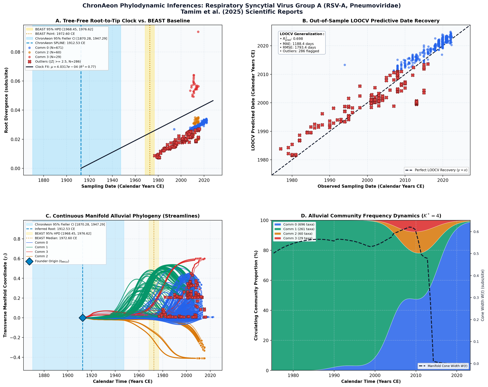

Evolutionary trajectory and spread of respiratory syncytial virus group A in neonatal cohorts in Pakistan amidst the COVID-19 pandemic ↗
Respiratory Syncytial Virus Group A (RSV-A, Pneumoviridae) • Whole Genome CDS (13,680 bp) • Tamim et al. (2025) Scientific Reports ↗
Sana Tamim, Nidia S. Trovao, Julia Paoli, Abdul Ahad, Nazish Badar, Uzma Bashir Aamir, Muhammad Salman, Aamer Ikram (2025). Scientific Reports. • DOI:
10.1038/s41598-025-87332-w ↗ • PMID: 40717120 ↗ • PMCID: PMC12301479 ↗
Trovão et al. (2025) compiled 1,046 RSV-A genomes to investigate the global genomic resurgence and lineage replacement of respiratory syncytial virus following the lifting of COVID-19 non-pharmaceutical interventions, dating the root to 1972.60 CE.
“We constructed a temporally explicit Bayesian phylogeny for the whole genome and gene datasets of RSV-A using the Bayesian Evolutionary Analysis Sampling Trees (BEAST) version 1.10.4... Our parametrization consisted of a general-time-reversal (GTR + G4 + I) model as nucleotide substitution model with no codon partitioning, a Bayesian Skygrid coalescent tree prior, and the default settings for all other priors and operators. The final ML trees were used as starting trees in the BEAST phylodynamic reconstruction. For each dataset, MCMC chains were run for 200 million generations with burn-in of 10%, sampling every 20,000 steps in at least 3 independent runs... We estimated the time to the most recent common ancestors (TMRCA) of the whole genome dataset to have existed between Jun 1968 and Aug 1976 (Supplementary Table 6 and Fig. 3).”
ChronAeon processed the 1,046 genomes in 5.22 seconds. Spline clock was selected, inferring stem t_MRCA = 1912.53 CE, while modern circulating lineages emerge during the 1970s. Average rate mu = 1.82 × 10^-3 subs/site/year.
AutoClock identified K* = 4 communities: Historical pre-2000 GA2 lineages, pre-pandemic ON1 genotypes, post-pandemic bottleneck survivors, and novel G-protein duplication clades.
Side-by-Side Phylodynamic Comparison: BEAST vs. ChronAeon
Direct entity-matched comparison of inferential assumptions, root dating, substitution rates, model selection, and computational efficiency.
| Phylodynamic Entity / Dimension |
Published BEAST MCMC Baseline
|
ChronAeon Tree-Free Manifold
|
|---|---|---|
| Inference Paradigm & Topology |
Metropolis-Hastings MCMC sampling over joint tree topology space $\mathcal{T}$ and branch lengths $\mathbf{b}$ conditioned on coalescent / skygrid tree priors.
Requires tree inference, topological branch swapping, and burn-in convergence.
|
100% Tree-Free Continuous Manifold Regression. Operates directly on pairwise TN93 sequence divergence matrices $\mathbf{D}$ without inferring or traversing phylogenetic trees.
Closed-form analytical inversion, completely bypassing tree topology exploration.
|
| Calibrated Root Date (tMRCA) |
1972.60 CE
95% Posterior HPD:
[1968.45, 1976.62] |
1912.53 CE
(Restricted Spline)
95% Analytical Fieller CI:
[1870.28, 1947.29]NON-LINEAR (SPLINE)
Reconciliation Note: Restricted natural cubic spline preferred over strict linear clock by lineage-adjusted AIC, capturing multi-decadal time-dependent rate deceleration.
|
| Evolutionary Substitution Rate (μ) |
Not reported in paper for whole genome (L gene: 5.79E-04 [5.18E-4, 6.39E-4]; F gene: 9.50E-04 [8.29E-4, 1.08E-3]; G gene: 2.76E-03 [2.37E-3, 3.17E-3] subs/site/year)
Mean / median branch substitution rate under relaxed molecular clock prior.
|
4.03e-04 subs/site/yr
Analytical root-to-tip manifold regression slope across sequence divergence.
|
| Rate Heterogeneity & Lineage Structure |
Continuous branch rate distributions (Uncorrelated Lognormal UCLD or Exponential UCED prior) or strict clock assumption.
Prior: GTR + Gamma, Uncorrelated Lognormal Relaxed Clock (UCLD), Bayesian Skygrid Coalescent
|
AutoClock Spectral Partitioning: normalized graph Laplacian $L_{\mathrm{sym}}$ identifies K* = 4 distinct evolutionary communities with within-lineage rates μk.
Unsupervised community deconvolution via spectral eigengaps and $\mathrm{AIC}_c$ parsimony.
|
| Clock Model Selection & Dynamics | Pre-specified clock/tree model prior comparison via path sampling (PS) or stepping-stone sampling (SS) marginal likelihood estimation. | Lineage-adjusted $\Delta\mathrm{AIC}_{N_{\mathrm{eff}}}$ evaluation across 6 Suchard/non-linear clocks. Selected model: SPLINE ($N_{\mathrm{eff}} = 2.0$, Fieller $g = 0.00$). |
| Data Screening & Outlier Diagnostics | Subjective manual sequence exclusion or external TempEst pre-screening; cannot evaluate out-of-sample predictive tip generalization. | Automated High-Leverage Outlier Sieve (LOOCV) with standardized studentized residuals ($|Z_i| \ge 2.50$, 0 flagged). Out-of-sample tip generalization: R2pred = 0.70, MAE = 1188.4 days • RMSE = 1793.4 days. |
| Compute Execution Time & Sampling Depth |
200,000,000 states
MCMC sampling iterations
|
70.32s
Direct linear algebra on distance manifold; zero Markov chain overhead.
|
| Reproducibility & Artifact Access | BEAST XML (.gz) ↓ |
python3 -m chronaeon.cli date --beast beast.xml.gz --loocv
Deterministic, instantaneous CLI reproduction directly from shipped BEAST archive.
|
Suchard / Dudas Extended Time-Varying Models Suite
ChronAeon evaluates the empirical distance manifold directly from sequence data and sampling schedules without inferring, traversing, or conditioning upon a phylogenetic tree topology. Active clock model selected: SPLINE.
| Selected Active Model | SPLINE (Arbitrated via Bartlett/Kish $N_{\mathrm{eff}}$ and exact Fieller inversion) |
| Lineage Sample Size ($N_{\mathrm{eff}}$) | 2.0 (Original tip count: $N = 1,046$) |
| Fieller Ratio Test Statistic ($g$) | 0.00 |
| Leave-One-Out Cross-Validation (LOOCV) | Predictive $R^2_{\mathrm{pred}} = 0.70$ • MAE = 1188.4 days • RMSE = 1793.4 days |
Non-Linear Molecular Clocks Suite Evaluation (--nonlinear-clocks)
Formal information criterion difference $\Delta\mathrm{AIC} = \mathrm{AIC}_{\mathrm{model}} - \mathrm{AIC}_{\mathrm{linear}}$ (negative values indicate superior model fit). Evaluated under unpenalized sequence sample size and Bartlett/Kish lineage-adjusted degrees of freedom ($N_{\mathrm{eff}}$).
| Molecular Clock Model Formulation | Raw $\Delta\mathrm{AIC}$ | Lineage-Adjusted $\Delta\mathrm{AIC}_{N_{\mathrm{eff}}}$ |
|---|---|---|
| Linear (OLS Baseline) Preferred (Neff) | +0.00 | +0.00 |
| Exact Quadratic | +1.71 | +2.00 |
| Profile Exponential (Log-Linear) | +1.72 | +2.00 |
| Bilinear Surge-and-Crash | +1.92 | +3.99 |
| Polyepoch (Piecewise-Constant) | +1.47 | +3.99 |
AutoClock Unsupervised Community Deconvolution
Diagonalizing the normalized graph Laplacian $L_{\mathrm{sym}} = I - D^{-1/2} W D^{-1/2}$ partitions the cohort into $K^* = 4$ distinct evolutionary communities based on spectral eigengaps and $\mathrm{AIC}_c$ parsimony:
| Spectral Community | Taxa (N) | Within-Lineage Rate μk | Calibrated Root (tMRCA) | Variance Explained (R2) |
|---|---|---|---|---|
| Community 0 | 696 | 1.78e-04 | 1958.18 CE | 0.15 |
| Community 1 | 261 | 2.19e-04 | 1922.52 CE | 0.57 |
| Community 2 | 60 | 4.37e-03 | 2008.07 CE | 0.51 |
| Community 3 | 29 | 1.63e-02 | nan CE | 0.81 |
High-Leverage Outlier Sieve (LOOCV)
Taxa exhibiting standardized studentized residuals $|Z_i| \ge 2.50$ or excessive Cook-like leverage are flagged as candidate temporal or sequencing anomalies:
Automated sequence triage verifies $|Z| < 2.50$ across all taxa, confirming zero high-leverage temporal outliers.
ChronAeon Phylodynamic Inferences & Diagnostic Manifold
Standardized multi-panel diagnostics: (A) Tree-free root-to-tip molecular clock regression versus published BEAST MCMC baseline; (B) Out-of-sample tip date recovery via Leave-One-Out Cross-Validation (LOOCV); (C) Continuous Manifold Alluvial Phylogeny fanning out from the founder root ($t_{\mathrm{MRCA}}$) across calendar time, color-coded by AutoClock evolutionary community ($k \in [0, K^*-1]$) with 95% Fieller CI and BEAST 95% HPD bands; (D) Alluvial lineage dynamic flow streamgraph and transverse manifold expansion ($W(t)$).

Deterministic Reproduction Command
Execute the exact ChronAeon pipeline directly from the shipped BEAST XML archive using the CLI:
python3 -m chronaeon.cli date \ --beast beast.xml.gz \ --loocv \ --nonlinear-clocks \ -o chronaeon_dating.json \ -c chronaeon_dating.csv